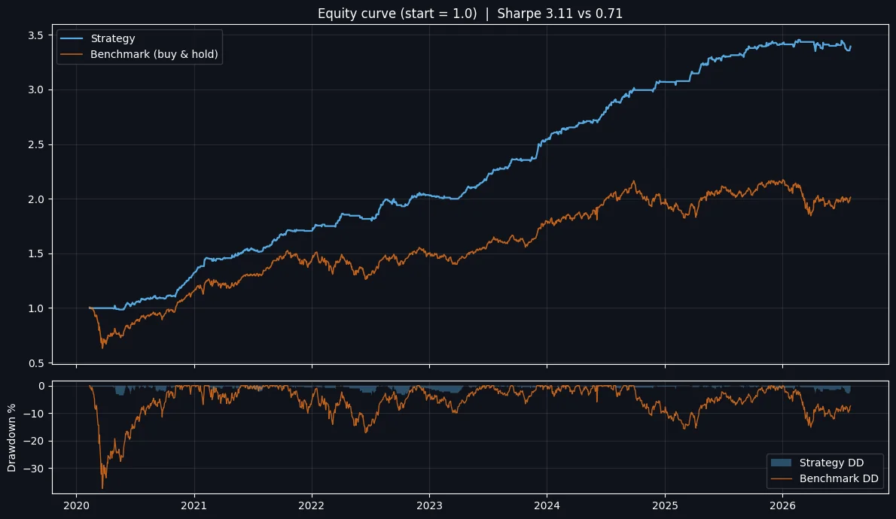

Overnight drift (BTST) on NIFTY 50
A long-only buy-today, sell-tomorrow strategy built on one observation: in Indian indices, most of the move happens overnight, not during the session.

Thesis
It's often said that Indian indices make their move overnight. I tested it by splitting returns in two: one backtest buys every open and sells the same close; the other holds from the close to the next open.
The intraday curve was flat and random. The overnight curve rose with the index. The real move happens overnight, and a simple trend filter on top of that split became this strategy.
Does it generalise?
- Other indices, same rules: about 25% CAGR on NIFTY Midcap Select and 30%+ on NIFTY Next 50.
- Cash equities: I screened 300+ stocks. The edge exists, but delivery costs eat it, so the strategy is scoped to index instruments.
- Long only by design: all 946 trades are long; there is no short side to flatter the numbers.
How I would trade it
Best expressed as a vertical debit spread: capped downside, positive delta, and the short leg offsets part of the theta. Buying options outright also works, but bleeds on flat openings. Futures carry the full delta, so one gap against the position can be large.
Full statistics
Backtest figures, net of modelled costs. Not live performance.
Performance
- CAGR
- 22.95%+3,647 pts / year
- Total return
- 280.19%+23,576.14 pts
- Sharpe
- 3.21Volatility 6.63%
- Sortino
- 6.20
- Calmar
- 6.03CAGR / max DD
- Max drawdown
- −3.81%−805.38 pts
- Longest drawdown
- 85 days
Trade efficiency
- Trades
- 94612.2 per month
- Win rate
- 59.8%566 / 946
- Profit factor
- 1.90
- Payoff ratio
- 1.28+0.503% / −0.393%
- Average trade
- +0.143%24.92 pts
Distribution
- Long trades
- 946100% of trades
- Short trades
- 0Long-only strategy
- Largest win
- +3.561%+802.55 pts
- Largest loss
- −3.059%−419.45 pts